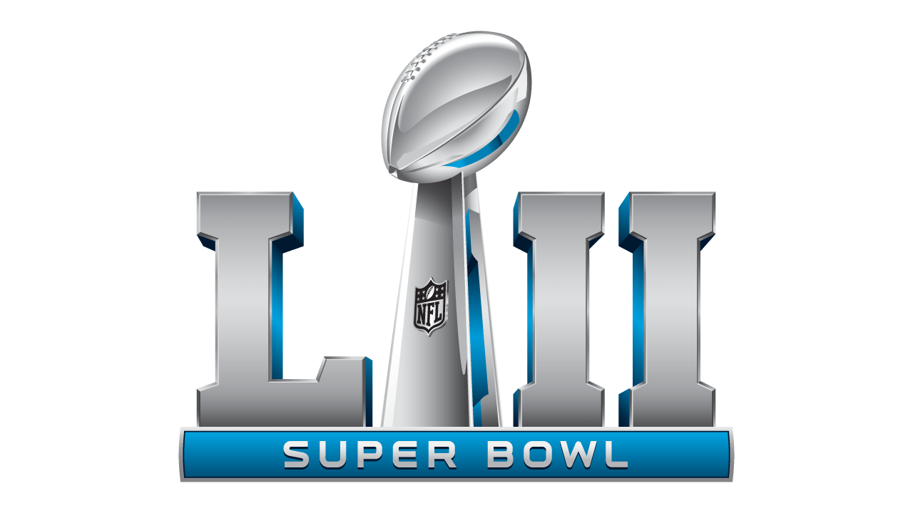

Introduction
Coming off of a 7 win 9 loss season under their new head coach and rookie Quaterback, the Philadelphia Eagles sought to make a statement this upcoming season with big name signings in the offseason. At the end of the 2016 season, the Eagles were at the bottom of the NFC East, and the sports media had declared that the 2017 season was not going to look much different for this team. However, despite the odds and the sports world agaisnt them, the Philadelphia Eagles persevered. The team overcame various injuries of their key players, one of which was 2nd year Quarterback Carson Wentz who played an MVP caliber year and had the most passing touchdowns in the league before going down in week 14. Even with these hardships the team boasted the best record in the NFL and was able to attain a first week bye as well as home field advantage going into the postseason.
The Philadelphia Eagles were consistantly being doubted in the regular season, and despite being the number 1 seed in the NFC, the doubt only grew larger in the postseason. With their star Quarterback out, the team looked to put their trust in backup Quarterback Nick Foles (who had previously been an Eagles starter before being traded). The team never skipped a beat, yet they were declared the underdogs at every step of the way. In their first playoff game agaisnt the Atlanta Falcons, the Philadelphia Eagles were the first number 1 seed to ever be an underdog in their first playoff game. In the face of adversity the Eagles won and made their way to the NFC Championship game against the best defense in the NFL under the Minnesota Vikings. Once again considered underdogs, even on their home turf, the Eagles did not back down and blew out the Viking to claim the conference title, as well as a trip to Super Bowl LII.
